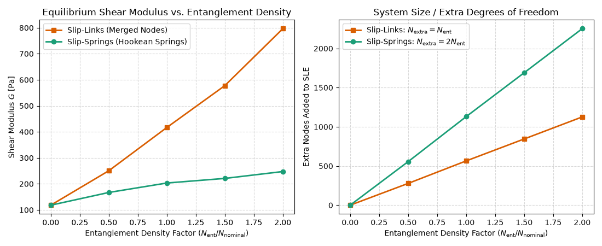

Note
Go to the end to download the full example code.
Modeling Entanglements: Slip-Links vs. Slip-Springs¶
In polymer network elasticity simulations using the Maximum Entropy Homogenization Procedure (MEHP) (Gusev [Gus19], Bernhard and Gusev [BG25]), topological entanglements impose constraints on polymer chain fluctuations.
In MEHPForceBalance2, users can choose between two distinct
representations for sampled entanglements via the entanglements_as_springs parameter:
Slip-Links (
entanglements_as_springs=False, default): The two entangled strand beads are merged into a single shared 4-functional junction node (\(\mathbf{r}_1 = \mathbf{r}_2\)). This imposes a rigid spatial constraint, effectively pinning the chains together at an instantaneous localized crosslink.Slip-Springs (
entanglements_as_springs=True): The two entangled strand beads remain distinct and are coupled by an additional Hookean spring. This introduces internal elastic compliance between the chains, allowing them to fluctuate at finite separation distances.
This example illustrates:
Topological Differences: Number of extra nodes, degrees of freedom, and springs introduced.
Elastic Compliance: How the shear modulus \(G\) scales with entanglement density under both models.
Physical Guidance: When to choose slip-links versus slip-springs.
Background & Mathematical Formulation¶
When an entanglement is identified between two strands \(s_1\) and \(s_2\) at contour positions \(\alpha_1\) and \(\alpha_2\):
In the Slip-Link representation: A single node is added at position \(\mathbf{R}_{\text{link}} = \frac{1}{2}(\mathbf{r}_1 + \mathbf{r}_2)\). Both strands are partitioned at this node into sub-springs:
\[N_{\text{extra nodes}} = N_{\text{ent}}, \quad N_{\text{extra springs}} = 0\]Because the constraint is rigid, any force transmitted across the entanglement directly stresses the network backbone without internal deflection.
In the Slip-Spring representation: Two separate nodes are placed at \(\mathbf{r}_1\) and \(\mathbf{r}_2\), and an explicit Hookean spring connects them:
\[N_{\text{extra nodes}} = 2 N_{\text{ent}}, \quad N_{\text{extra springs}} = N_{\text{ent}}\]The entanglement spring acts in series with the strand segments, adding compliance and reducing the effective stiffness of the entanglement constraint.
import matplotlib.pyplot as plt
from pylimer_tools.io.bead_spring_parameter_provider import (
ParameterType,
get_parameters_for_polymer,
)
from pylimer_tools_cpp import MCUniverseGenerator
Setting Up the Model Polymer Network¶
We generate a model crosslinked PDMS network using MCUniverseGenerator.
The analytical Brownian-bridge method directly samples entanglements from the crosslinker
universe without requiring intermediate bead allocation.
params = get_parameters_for_polymer(
"PDMS", parameter_type=ParameterType.GAUSSIAN)
b = params.get("<b>").to(params.get("distance_units")).magnitude
bead_density = params.get_bead_density()
cutoff = params.get_sampling_cutoff()
nominal_ent_density = params.get_entanglement_density()
r02 = params.get("R02").to(params.get("distance_units") ** 2).magnitude
kbt = params.get("T") * params.get("kb")
gamma_conv = (
(kbt / ((params.get("distance_units")) ** 3)).to("MPa")).magnitude
n_strands = 600
strand_len = 40
n_atoms = n_strands * strand_len + int(0.5 * n_strands)
vol = n_atoms / bead_density
box_l = vol ** (1.0 / 3.0)
gen = MCUniverseGenerator(box_l, box_l, box_l)
gen.set_seed(123)
gen.set_bead_distance(b)
gen.set_mean_squared_bead_distance(b**2)
gen.add_strands(n_strands, [strand_len] * n_strands)
gen.add_crosslinkers(int(0.5 * n_strands), 4)
gen.link_strands_to_conversion(0.95)
nominal_n_ent = int(nominal_ent_density * vol)
print(f"Network volume: {vol:.1f}, Nominal entanglements: {nominal_n_ent}")
Network volume: 10920.8, Nominal entanglements: 663
Sweeping Entanglement Density: Links vs. Springs¶
We evaluate the equilibrium shear modulus across varying entanglement levels, from unentangled phantom networks (density factor 0.0) up to twice the nominal entanglement density (density factor 2.0).
density_factors = [0.0, 0.5, 1.0, 1.5, 2.0]
g_links = []
g_springs = []
extra_atoms_links = []
extra_atoms_springs = []
for factor in density_factors:
n_target = int(factor * nominal_n_ent)
if n_target == 0:
# Bare unentangled crosslinker network
fb_bare = gen.get_force_balance2()
fb_bare.run_force_relaxation()
g_pa = (gamma_conv * fb_bare.get_gamma_factor(r02) / vol) * 1e6
g_links.append(g_pa)
g_springs.append(g_pa)
extra_atoms_links.append(0)
extra_atoms_springs.append(0)
else:
# Sample entanglements using identical seed for fair comparison
es = gen.sample_entanglements(
n_target, cutoff, 0.0, 0, 3.0, "ent_seed", True)
# 1. Slip-Links (merged junction nodes)
fb_l = gen.get_force_balance2(
es, crosslinker_type=2, entanglements_as_springs=False
)
extra_atoms_links.append(fb_l.get_nr_of_extra_atoms())
fb_l.run_force_relaxation()
g_l_pa = (gamma_conv * fb_l.get_gamma_factor(r02) / vol) * 1e6
g_links.append(g_l_pa)
# 2. Slip-Springs (explicit Hookean coupling springs)
fb_s = gen.get_force_balance2(
es, crosslinker_type=2, entanglements_as_springs=True
)
extra_atoms_springs.append(fb_s.get_nr_of_extra_atoms())
fb_s.run_force_relaxation()
g_s_pa = (gamma_conv * fb_s.get_gamma_factor(r02) / vol) * 1e6
g_springs.append(g_s_pa)
Visualizing the Mechanical & Structural Differences¶
The plots below compare:
Equilibrium Shear Modulus :math:`G` vs. Entanglement Density: Slip-links exhibit a strong, near-linear increase in modulus with entanglement density due to rigid node coalescing. In contrast, slip-springs display a softer, sublinear response that saturates because the intermediate spring provides elastic compliance.
System Degrees of Freedom (Extra Nodes): Slip-springs introduce exactly twice as many extra node coordinates into the linear system of equations as slip-links.
fig, (ax_mod, ax_dof) = plt.subplots(1, 2, figsize=(11, 4.5))
# Modulus comparison
ax_mod.plot(
density_factors,
g_links,
"s-",
color="#d95f02",
linewidth=2,
markersize=6,
label="Slip-Links (Merged Nodes)",
)
ax_mod.plot(
density_factors,
g_springs,
"o-",
color="#1b9e77",
linewidth=2,
markersize=6,
label="Slip-Springs (Hookean Springs)",
)
ax_mod.set_xlabel(
r"Entanglement Density Factor ($N_{\mathrm{ent}} / N_{\mathrm{nominal}}$)"
)
ax_mod.set_ylabel(r"Shear Modulus $G$ [Pa]")
ax_mod.set_title("Equilibrium Shear Modulus vs. Entanglement Density")
ax_mod.grid(True, linestyle="--", alpha=0.5)
ax_mod.legend(frameon=True)
# System size comparison
ax_dof.plot(
density_factors,
extra_atoms_links,
"s-",
color="#d95f02",
linewidth=2,
markersize=6,
label=r"Slip-Links: $N_{\mathrm{extra}} = N_{\mathrm{ent}}$",
)
ax_dof.plot(
density_factors,
extra_atoms_springs,
"o-",
color="#1b9e77",
linewidth=2,
markersize=6,
label=r"Slip-Springs: $N_{\mathrm{extra}} = 2 N_{\mathrm{ent}}$",
)
ax_dof.set_xlabel(
r"Entanglement Density Factor ($N_{\mathrm{ent}} / N_{\mathrm{nominal}}$)"
)
ax_dof.set_ylabel("Extra Nodes Added to SLE")
ax_dof.set_title("System Size / Extra Degrees of Freedom")
ax_dof.grid(True, linestyle="--", alpha=0.5)
ax_dof.legend(frameon=True)
plt.tight_layout()
plt.show()

Practical Recommendations¶
Feature |
Slip-Links ( |
Slip-Springs ( |
|---|---|---|
Constraint Nature |
Rigid point constraint (\(\mathbf{r}_1 = \mathbf{r}_2\)). |
Compliant harmonic coupling (\(k_{\text{spring}} > 0\)). |
Modulus Response |
Higher; scales more steeply with entanglement density. |
Softer; exhibits saturation due to series compliance. |
System Size (SLE) |
Smaller (\(+ N_{\text{ent}}\) nodes, \(0\) extra bonds). |
Larger (\(+ 2 N_{\text{ent}}\) nodes, \(+ N_{\text{ent}}\) extra springs). |
Recommended Use |
Standard affine/phantom homogenization where entanglements act as effective crosslinks. |
Studies exploring inter-chain interaction compliance or finite-range topological coupling. |
Total running time of the script: (0 minutes 5.720 seconds)